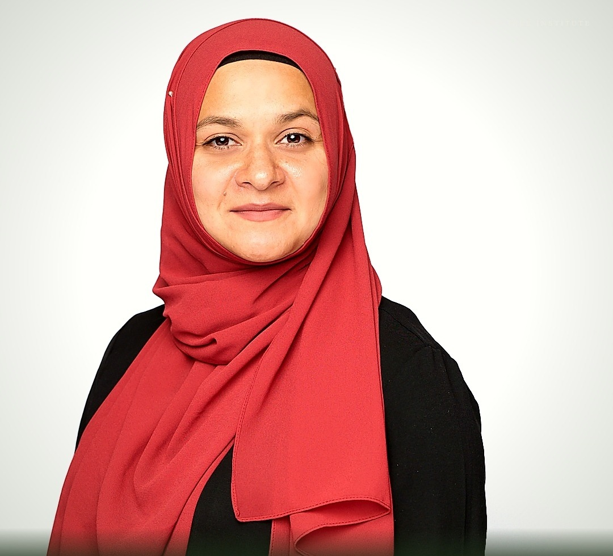

About
A generation of Muslim youth and women who speak, lead, and grow without ever separating their faith from their voice.
Olive Tree Institute exists to help Muslim children, women, and families return to the confidence, voice, and character that were always theirs, rooted in fitra, not built from nothing. We turn that return into structured, faith-centered programs in leadership, communication, and character, not one-off workshops.
Olive Tree Institute was built for a specific gap. Most public speaking and leadership programs ask Muslim families to check their faith at the door and adopt frameworks stripped of the values they are trying to build in their kids, or in themselves. OTI does the opposite.
We take Islamic character, confidence, and leadership principles and turn them into replicable curricula, structured programs, and tools that Muslim parents across the GTA can trust, and that Muslim women can grow inside of.
We are not a series of one-off workshops. We build systems: facilitator guides, workbooks, full multi-week curricula, programs designed to be repeated and scaled, not reinvented from scratch every time.
The olive tree is mentioned in the Quran, in Surah At-Teen and Surah An-Noor. A tree of light, of wisdom, of blessing. Its roots go deeper than you can see, and it gives fruit for generations.
That is what we want this to be, for your children, for you, for us.
It isn't decorative. Surah Ibrahim 14:24 describes a good tree as one with firm roots and branches that reach into the sky with no ceiling, and that verse is the actual structure behind our programs, not just a theme. Roots is identity, who you are before anyone hands you a title. Branches is vision, dreaming at full size and handing the how to Allah. Fruit is something real, actually built. Harvest is standing up and saying it out loud to your own community.
The whole brand has been rooted in fitra since founding: the idea that who you really are isn't invented, it's uncovered, returned to. Each program teaches one piece of that same tree. Speak from Within is the voice. Vision Architects is the branches. Young Founders is the fruit. Rooted is the first program that walks the whole tree, root to harvest, in one room, over seven weeks.

Rimshah Ahmed is the founder of Olive Tree Institute. She is a Muslim woman of Kashmiri heritage, a mother of three, based in the GTA, and an award-winning public speaker (TEDxOntarioPublicService, Top 3 at Speaker Slam North America, featured on Global News), educator, program designer, and spoken word poet.
I didn't grow up thinking I had a voice worth hearing.
I spent a lot of years making myself small, in rooms, in conversations, in my own head.
A lot of what I build now comes from that place. From knowing what it costs to stay silent. From wanting better for the kids and women in this community than what I had growing up. That is what Olive Tree Institute is.
It started with my own children. I wanted them to have something I could not find anywhere: not just public speaking classes, but something rooted in faith that would give them the leadership skills, the self-awareness, the entrepreneurial thinking, and the personal development tools I did not discover until much later in my own life. I looked for it. It did not exist the way I needed it to. So I built it.
I shared it with our home school community. Kids registered. Parents asked for more. So I kept building, more programs, more depth, more of what I wished I had found decades earlier.
Then someone asked if I could build something for women too. So I did. Because how do we raise confident children if we haven't done that work in ourselves first? The same tools. The same depth. The same faith-rooted foundation, built for the women who are already carrying everything.
This was never just for my children. It was for every child, every woman, every person who deserves access to these tools while there is still time for it to shape everything.
My own voice didn't start on a stage. It started on a page, spoken word poetry. Writing came naturally. Speaking took a decade of stages to build: from poetry to TEDx, from community rooms to Speaker Slam Top 3 in North America, to Global News.
That journey taught me one thing above everything else. Voice is not something you either have or you don't. It is already in you. It always was. It just needs the right nutrition, the right space, and enough time to grow into what it was always meant to be.
That is what we build at Olive Tree Institute: programs for youth and adults, all rooted in faith, all built from the inside out.
Not a performance. A foundation.
Rimshah Ahmed, Founder of Olive Tree Institute